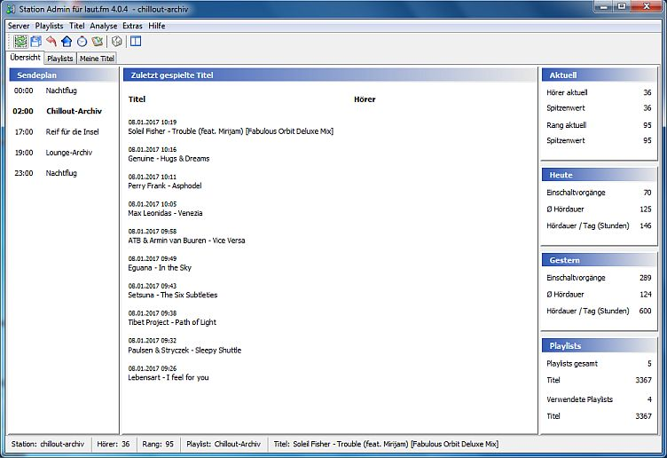

Übersicht

Auf dem -Tab bekommst Du einen Überblick über die wichtigsten Infos zu Deiner Station:
- Links steht der Sendeplan für den aktuellen Tag. Durch Klick auf eine Sendung kannst Du zu der entsprechenden Playlist springen.
- In der Mitte stehen die zuletzt gespielten Titel. Für Titel die nach dem Programmstart gespielt wurden steht neben dem Titel die Hörerzahl zum Zeitpunkt des Titelstarts.
- Rechts oben und in der Mitte siehst Du die wichtigsten Statistiken zu Deiner Station wie Hörerzahl, durchschnittliche Hördauer etc.
- Darunter befinden sich einige statistische Informationen über Deine Playlists und verwendete Titel.